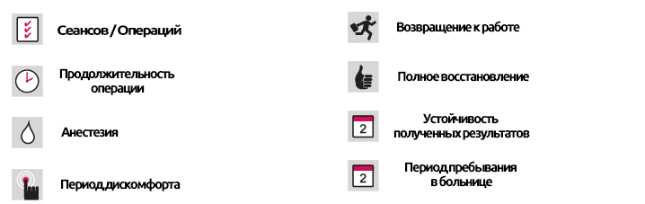

Ортодонтическое лечение
Ортодонтическое лечение
КРАТКОЕ ОПИСАНИЕ ЛЕЧЕНИЯ

Как возникают ортодонтические проблемы и как их лечить?
Большинство случаев неровностей челюсти (таких как смещенные челюсти) обычно имеют наследственный характер. Лечение зависит от возраста пациента: если у пациента, достигшего предподросткового возраста, есть проблемы с верхней или нижней челюстью, можно применять ортодонтическое лечение. Однако, если у взрослого пациента есть серьезные проблемы с челюстной костью, то единственным жизнеспособным решением для лечения могут стать хирургические процедуры, проводимые наряду с ортодонтическим лечением. Неровности челюсти также могут быть вызваны дыханием через рот, и такие пациенты обычно имеют V-образную верхнюю челюсть.
Длительное использование пустышек и сосок для детских бутылочек, сосание большого пальца, грызение ногтей и т. д. может привести к ортодонтическим и даже костным проблемам. Эти привычки следует лечить как можно раньше (в возрасте от 7 до 10 лет). Если эти привычки обнаружены достаточно рано можно использовать множество типов аппаратов для их устранения. Сужение скелета верхней челюсти можно предотвратить применив ортодонтические инструменты.
В некоторых случаях пациенты наследуют челюсть от одного родителя, а зубы - от другого. Иногда бывают случаи когда челюсть большая, а зубы маленькие, что вызывает зазоры между зубами, в случаях наоборот, становаися причиной скученности зубов.
Наличие большего, чем обычно, языка может привести к расширению промежутков между зубами. Это особенно актуально для зазоров, оставленных зубами, которые были вырваны.
Другая причина скученности зубов - выпадение молочных зубов раньше или позже, чем обычно. У каждого молочного зуба есть свое время для выпадения, и в тех случаях, если они выпадают раньше или позже, окружающие зубы могут двигаться к зазорам, вызывая трение на внутренней части нашего внешнего изгиба или даже предотвращая появление взрослых зубов.
Подходит ли ортодонтическое лечение для любого возраста?
Когда речь идет об ортодонтическом лечении не существует никаких возрастных ограничений, однако возраст пациента влияет на планирование и продолжительность лечения. Ортодонтия для взрослых становится все более популярной во всем мире. Можно использовать порцелановые, натуральные и даже невидимые прозрачные скобки (для брекетов), чтобы свести к минимуму эстетические переживания.
Является ли ортодонтическое лечение болезненным?
Конечено же, нет! Тем не менее, проволочные дуги могут тереться о внутреннюю щеку, вызывая некоторые порезы, которые заживают самостоятельно примерно через неделю и, как правило, не повторяются, за исключением редких случаев, когда ломаются сами брекеты или проволочные дуги и т. д. Такие проблемы может исправить ваш стоматолог. Кроме того, предоставляется специальный тип «воска», который предотвращает трение внутренней щеки, и пациент сам наносит его в том месте, где проволочные дуги вызывают дискомфорт.
Кроме того, после того, как были установлены проволочные дуги или после осмотра может ощущаться боль при сильном укусе или при употреблении твердой пищи . Эта боль проходит через 3-4 дня.
Брекеты вызывают кариес?
Клинически доказано, что брекеты не вызывают появление кариеса. Фактически, они защищают зубы от разрушения, поскольку бактерии не могут попасть между скобками и поверхностью кожи. Однако вокруг скобок накапливается большее, чем обычно, количество бактерий, а это означает, что существует более высокий связанный с этим риск, который можно удалить с соблюдением правил гигиены полости рта и тщательной очистки краев скоб.
Могу ли я почистить зубы со вставленными брекетами?
Вы можете чистить зубы с такой же легкостью, как и без брекетов. При чистке зубов нет риска выпадания брекетов или разрыва проволочных дуг, но при этом вам следует быть немного более осторожным. Вы можете использовать специально разработанные ортодонтические зубные щетки и специально разработанные инструменты, такие как резиновые массажеры для десен и зубные щетки, чтобы удалить кусочки пищи, застрявшие в скобках.
На что следует обратить внимание после установки брекетов?
Вы должны избегать употребления твердой пищи, которая может привести к разрыву проволочных дуг. Яблоки, груши и т. п. перед употреблением в пищу следует разрезать и нарезать ломтиками. У фруктов с семенами, такими как маслины, должны быть удалены их семена перед едой. Избегайте кислых напитков и липких продуктов / закусок, таких как марципан и жевательная резинка.
Как долго длится челюстно-ортопедическое лечение?
Продолжительность ортодонтического лечения зависит от возраста пациента, типа и серьезности проблемы и используемого метода лечения. Однако наиболее важным фактором является то, насколько хорошо пациент следует рекомендациям своего врача. Регулярные осмотры на предмет корректировок, хорошая гигиена полости рта, нередко ломающиеся скобы и проволочные дуги, а также регулярное использование предоставленных инструментов обеспечат максимально короткую продолжительность лечения. При хорошем планировании продолжительность лечения, в среднем, составляет 1,5 года, при наихудшем сценарии - 2,5 года. Наиболее удачливым пациентам не придется носить брекеты больше 1 года.
Находятся ли зубы, подвергшиеся ортодонтическому лечению, риску возникновения новых ортодонтических проблем?
На протежении всей нашей жизни наши зубы постоянно движутся, и даже нормальные, здоровые зубы со временем могут стать кривыми, скученными и т. д. из-за давления, создаваемого прикусыванием и стискиванием. Зубам, которые подвергаются ортодонтическому лечению, требуется длительное время, чтобы полностью приспособиться и адаптироваться к своему новому положению, пока кости челюсти и десны оседают. Чтобы снизить риск осложнений после снятия брекетов, пациенту рекомендуется пройти дополнительные процедуры, при которых брекеты могут быть установлены на задней части зубов, или пациент будет носить съемный фиксатор.